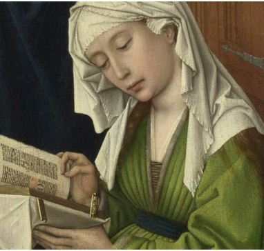

The first female typographers
From 1476 to 1484, the Dominican nuns of Sanctum Jacobum
de Ripoli were printing in Florence.They published many books
and undoubtedly numerous broadsides. A logbook of the convent
press was discovered in the eighteenth century and contains the earliest
record of a female compositor, a nun, who in 1481/82 typeset a folio
edition of Il Morgante, a work by Italian poet Luigi Pulci (1432–84).
In Mantua, northern Italy, about 1476, Estellina Conat, wife to physician and
printer Abraham Conat was involved in the typesetting of one of the earliest printed
Hebrew books, a small (octavo) edition of Behinat Olam.